)
FIGURE 13.3 Testing for a zero mean.
| Previous | Table of Contents | Next |
The mean of these values is zero and their sample standard deviation is 0.138. The t[0.95;7] from Table A.4 is 1.895. Thus, the confidence interval for the mean error is
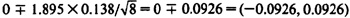
A common use of confidence intervals is to check if a measured value is significantly different from zero. When comparing a random measurement with zero, the statements have to be made probabilistically, that is, at a desired level of confidence. If the measured value passes our test of difference with a probability greater than or equal to the specified level of confidence, 100(1 - α)%, then the value is significantly different from zero.
The test consists of determining a confidence interval and simply checking if the interval includes zero. The four possibilities are shown in Figure 13.3, where CI is used as an abbreviation for confidence interval. The CI is shown by a vertical line stretching between the lower and upper confidence limits. The sample mean is indicated by a small circle. In cases (a) and (b), the confidence interval includes zero, and therefore, the measured values are not significantly different from zero. In cases (c) and (d), the confidence interval does not include zero, and therefore, the measured value is significantly different from zero.
FIGURE 13.3 Testing for a zero mean.
Sample size = n = 7
Mean = 7.20/7 = 1.03
Sample variance = (22.84 - 7.20*7.20/ 7)/6 = 2.57
Sample standard deviation = 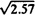 = 1.60
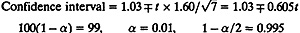
100(1-γ) = 99, γ = 0.01, 1-γ/2 = 0.995
From Table A.4 in the Appendix, the t-value at six degrees of freedom is t[0.995;6] = 3.707, and
99% confidence interval = (-1.21, 3.27)
The confidence interval includes zero. Therefore, we cannot say with 99% confidence that the mean difference is significantly different from zero.
The procedure for testing for zero mean applies equally well to any other value as well. For example, to test if the mean is equal to a given value a, a confidence interval is constructed as before, and if the interval includes a, then the hypothesis that the mean is equal to a cannot be rejected at the given level of confidence. The following example illustrates this extension of the test.
A majority of performance analysis projects require comparing two or more systems and finding the best among them. This is the problem addressed in
this section. The discussion, however, is limited to comparing just two systems on very similar workloads. If there are more than two systems or if the workloads are significantly different, the analysis of experimental design techniques discussed later in Part IV of this book should be used.
The statistical procedures to compare two systems are an extension of the test for a zero mean described earlier in Section 13.3. The procedure for paired and unpaired observations are different. These terms and the corresponding procedures are described next.
If we conduct n experiments on each of the two systems such that there is a one-to-one correspondence between the ith test on system A and the ith test on system B, then the observations are called paired. For example, if xi and yi represent the performance on the ith workload, the observations would be called paired. If there is no correspondence between the two samples, the observations are called unpaired.
The analysis of paired observation is straightforward. The two samples are treated as one sample of n pairs. For each pair, the difference in performance can be computed. A confidence interval can be constructed for the difference. If the confidence interval includes zero, the systems are not significantly different.
The performance differences constitute a sample of six observations, {-13.7, 13.1, -2.8, -1.1, -3.0, 5.6}.
For this sample:
Sample mean = -0.32
Sample variance = 81.62
Sample standard deviation = 9.03
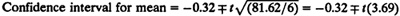
The 0.95-quantile of a t-variate with five degrees of freedom is is 2.015:
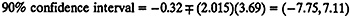
The confidence interval includes zero. Therefore, the two systems are not different.
The analysis of unpaired observations is a bit more complicated than that of the paired observations. Suppose we have two samples of size na and nb for alternatives A and B, respectively. The observations are unpaired in the sense that there is no correspondence between ith observations in the two samples. The steps to determine the confidence interval for the difference in mean performance requires making an estimate of the variance and an effective number of degrees of freedom. The procedure is as follows:
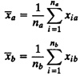
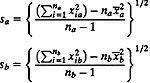
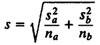
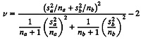
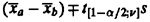
This procedure is known as a t-test.
For system A:
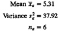
For System B:

Then
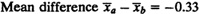
Standard deviation of mean difference = 3.698
Effective number of degrees of freedom f = 11.921
0.95-quantile of t-variate with 12 degrees of freedom = 1.71
90% confidence interval for difference = (-6.92, 6.26)
The confidence interval includes zero. Therefore, at this confidence level the two systems are not different.
| Previous | Table of Contents | Next |
){kind=link}